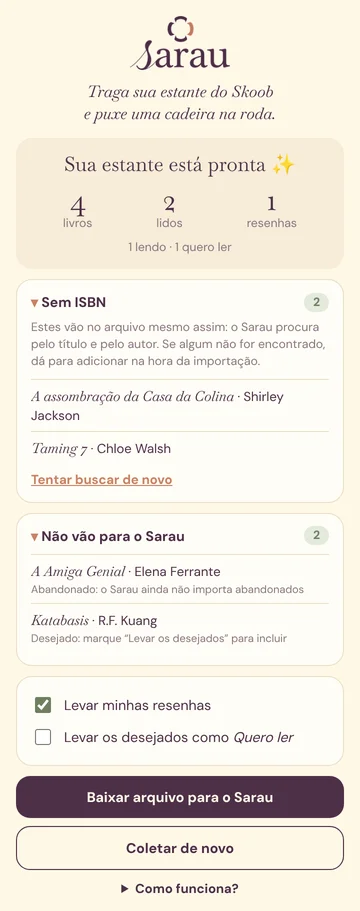

Traga sua estante do Skoob
Seus livros, suas notas e suas resenhas, sem começar do zero.
A extensão Importar Skoob para o Sarau lê a sua estante do Skoob, no seu computador, e gera um arquivo que o Sarau importa em poucos toques.
- Lidos, lendo e quero ler
- Notas, com meia estrela
- Datas em que você terminou cada livro
- Suas resenhas
- ISBN de cada livro, para achar a edição certa
Para Google Chrome no computador (Windows, Mac ou Linux). Versão de teste.

Como instalar
A extensão ainda está em teste e não está na Chrome Web Store. Por enquanto, a instalação é feita pelo modo de programador do Chrome. São só uma vez e uns 2 minutos.
extensao-skoob-sarau num lugar que você não vá apagar, como Documentos.chrome://extensions na barra de endereços e aperte Enter.extensao-skoob-sarau, a que tem o arquivo manifest.json dentro.Como usar
Perguntas
Meus dados vão para algum lugar?
Não. A extensão usa a sua própria conta do Skoob, no seu computador, e só guarda os dados dentro dela até virar o arquivo. Nada é enviado para o Sarau nem para ninguém até você mesma importar o arquivo no app.
Alguns livros aparecem como "Sem ISBN". E agora?
Eles vão no arquivo mesmo assim: o Sarau procura pelo título e pelo autor. Se algum não for encontrado, dá para adicionar na hora da importação e colocar a capa depois, pela página do livro.
Por que alguns livros "Não vão para o Sarau"?
A extensão mostra o motivo de cada um: abandonados (o Sarau ainda não importa), desejados (marque a opção para levar como Quero ler) e livros que estão só em "Tenho" no Skoob, sem estante de leitura.
Funciona no celular?
Não: extensões só funcionam no Chrome do computador. Se você não tem computador, pode exportar sua estante por outras extensões ou planilhas: o Sarau lê arquivos do Goodreads, do StoryGraph e planilhas simples.
Deu erro. O que eu faço?
Aperte F5 na aba do Skoob e tente de novo. Se continuar, escreva para contato.sarauapp@gmail.com ou use Conta › Enviar opinião ou erro no app.
O Sarau não tem ligação com o Skoob. A extensão apenas ajuda você a levar os seus próprios dados de leitura. · Privacidade